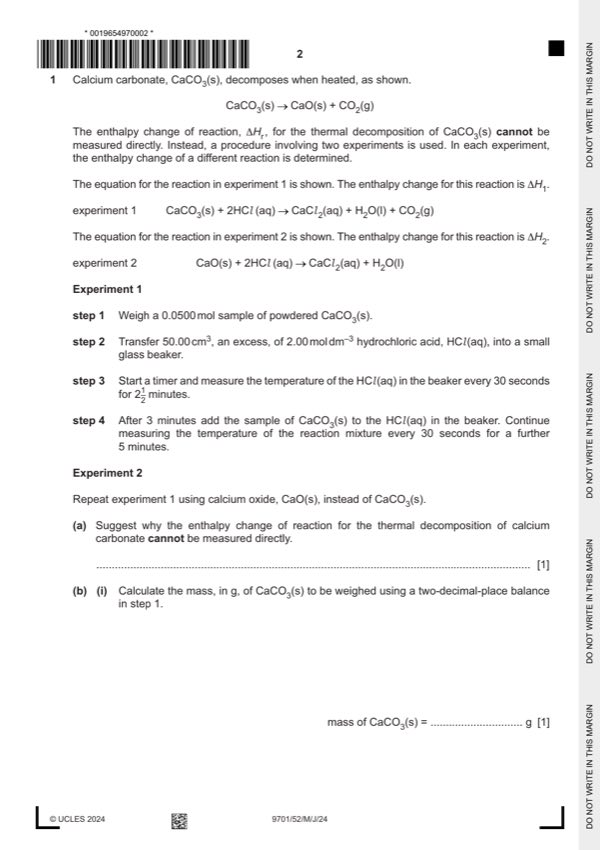

Question 1

Original paper page 2
Part 1(a) — solution
you cannot (easily) measure temperature (change) whilst applying heat 1
Mark points
- Include the ideas shown in the solution above.
Part 1(b)(i) — solution
5.01 g 1
Mark points
- Include the ideas shown in the solution above.
Part 1(b)(ii) — solution
- [M1] order of weighing: 2
Mark points
- [M1] order of weighing: 2
Part 1 — solution
weighing boat + CaCO3 is weighed
(CaCO3 added to beaker containing HCl)
Mark points
- Include the ideas shown in the solution above.
Part 1(c) — solution
burette AND burette measures to nearest 0.05 cm3 1
Mark points
- Include the ideas shown in the solution above.
Part 1(d) — solution
stir the solution / mixture 1
Mark points
- Include the ideas shown in the solution above.
Part 1(e)(i) — solution
- [M1] 10 points plotted correctly from t = 3.5 mins to t = 8 mins 2
- [M2] line of best fit drawn involving points from 4 to 8 minutes AND extrapolated back to 3 minutes
Mark points
- [M1] 10 points plotted correctly from t = 3.5 mins to t = 8 mins 2
- [M2] line of best fit drawn involving points from 4 to 8 minutes AND extrapolated back to 3 minutes
Part 1(e)(ii) — solution
- 38.5 – 19.0 = 19.5 C 1
Mark points
- 38.5 – 19.0 = 19.5 C 1
Part 1(f) — solution
the reaction is not complete (at 3.5 minutes) 1
Mark points
- Include the ideas shown in the solution above.
Part 1(g) — solution
- [M1] q = 50 g x 4.18 J g–1 K–1 x 6 K = 12958 J 2
- [M2] H2 = M1 / 0.0500 = 12 958 J / 0.0500 mol = 259 160 J mol–1 = –259 kJ mol–1
Mark points
- [M1] q = 50 g x 4.18 J g–1 K–1 x 6 K = 12958 J 2
- [M2] H2 = M1 / 0.0500 = 12 958 J / 0.0500 mol = 259 160 J mol–1 = –259 kJ mol–1
Part 1(h) — solution
- ∆Hr = ∆H1 – ∆H2 = –84 – (–259) = (+)175 (kJ mol–1) 1
Mark points
- ∆Hr = ∆H1 – ∆H2 = –84 – (–259) = (+)175 (kJ mol–1) 1
Part 1(i) — solution
- [M1] weakness: heat loss to the surroundings 2
- [M2] improvement: use a lid
Mark points
- [M1] weakness: heat loss to the surroundings 2
- [M2] improvement: use a lid